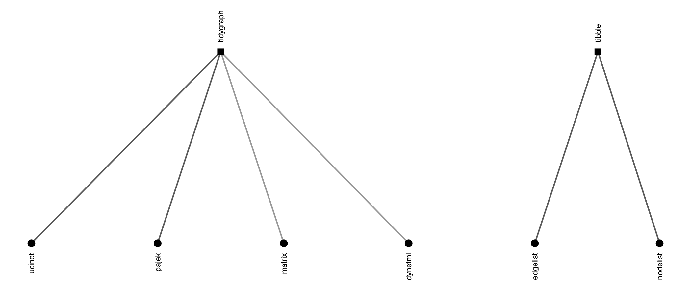
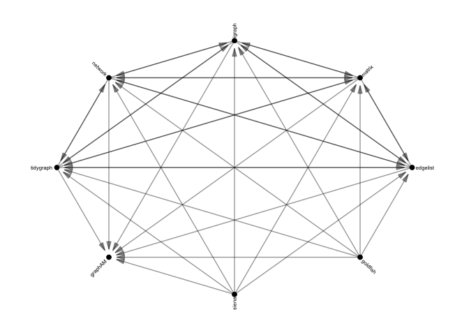
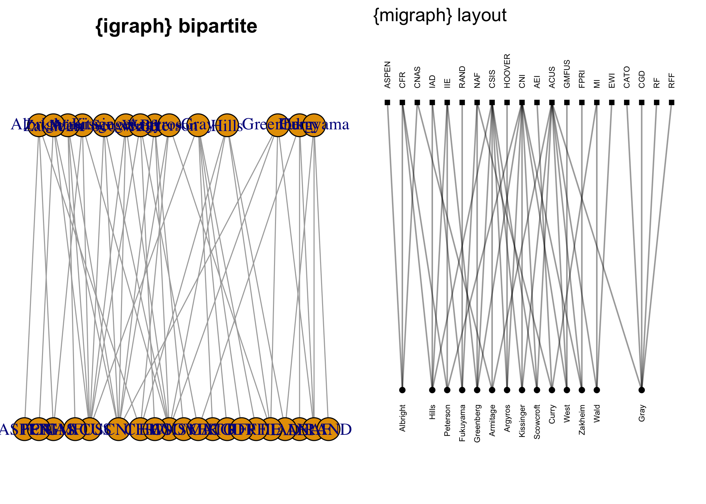

About the package
migraph works with and extends existing network analysis packages for analysing multimodal networks. It provides a common, standard syntax for working with and analysing both one-mode and two-mode networks.

The package is intended as a software companion to the book:
David Knoke, Mario Diani, James Hollway, and Dimitris Christopoulos (2021) Multimodal Political Networks. Cambridge University Press: Cambridge.
Most datasets used in the book are included in this package, and the package implements most methods discussed in the book. Since many of theses datasets and routines are discussed and analysed more there, if you like the package please check out the book, and vice versa.
How does migraph help?
migraph can help with many network analytic tasks, including Making and Manipulating network data, Marking and Measuring nodes, ties, and networks, calculating Motifs and identifying Memberships, as well as Modelling and Mapping.
Making network data
Including network data
migraph includes a number of prominent network datasets, especially multimodal and multiplex examples for demonstrating more advanced methods.
-
mpn_bristol,mpn_cow_igo,mpn_cow_trade,mpn_DE_1990,mpn_DE_2008,mpn_DemSxP,mpn_elite_mex,mpn_elite_usa_advice,mpn_elite_usa_money,mpn_IT_1990,mpn_IT_2008,mpn_OverSxP,mpn_RepSxP,mpn_ryanair,mpn_UK_1990,mpn_UK_2008 -
ison_adolescents,ison_algebra,ison_bb,ison_bm,ison_brandes,ison_brandes2,ison_karateka,ison_lotr,ison_marvel_relationships,ison_marvel_teams,ison_mb,ison_mm,ison_networkers,ison_southern_women
Importing network data
If that’s not enough, migraph offers a number of options for importing network data found in other repositories. migraph can import and export to Excel edgelists and nodelists, UCINET, Pajek, and DynetML files, e.g.:

Inventing network data
migraph includes algorithms for making networks with particular properties. The create_* group of functions create networks with a particular structure, e.g.:
-
create_complete(),create_components(),create_core(),create_empty(),create_lattice(),create_ring(),create_star(),create_tree()
The generate_* group of functions generate networks from particular generative mechanisms, e.g.:
Note that all these functions work to create two-mode networks as well as one-mode versions.
Manipulating network data
In addition to functions that help add elements to or extract elements from a network, migraph also includes functions for coercing and changing network data.
Coercing network data
Once network data is in R, migraph’s as_*() functions can be used to translate objects from one of the above classes into any other, and include:

These functions are designed to be as intuitive and lossless as possible, outperforming many other class-coercion packages.
We use these functions internally in every migraph function to (1) allow them to be run on any compatible network format and (2) use the most efficient algorithm available. This makes migraph compatible with your existing workflow, whether you use base R matrices or edgelists as data frames, {igraph}, {network}, or {tidygraph}, and extensible by developments in those other packages too.
Changing network data
migraph’s to_*() functions can be used on any class object to reformat, transform, or split networks into networks with other properties, e.g.:
-
to_anti(),to_blocks(),to_components(),to_edges(),to_egos(),to_giant(),to_main_component(),to_matching(),to_mode1(),to_mode2(),to_multilevel(),to_named(),to_onemode(),to_redirected(),to_simplex(),to_subgraph(),to_subgraphs(),to_ties(),to_twomode(),to_undirected(),to_uniplex(),to_unnamed(),to_unsigned(),to_unweighted()
Reformatting means changing the format of the network, e.g. from directed to undirected via to_undirected(). Transforming means changing the dimensions of the network, e.g. from a two-mode network to a one-mode projection via to_mode1(). Splitting means separating a network, e.g. from a whole network to the various ego networks via to_egos(). Those functions that split a network into a list of networks are distinguishable as those to_*() functions that are named in the plural.
Marks and Measures
migraph offers a range of measures and models with sensible defaults. Many wrap existing functions in common packages for use with one-mode networks, but extend these to treat and/or normalise for two-mode (and sometimes three-mode) networks correctly. Functions are given intuitive and succinct names that avoid conflicts with existing function names wherever possible.
Marking networks
migraph’s *is_*() functions offer fast logical tests of various properties. Whereas is_*() returns a single logical value for the network, node_is_*() returns a logical vector the length of the number of nodes in the network, and tie_is_*() returns a logical vector the length of the number of ties in the network.
-
is_acyclic(),is_aperiodic(),is_bipartite(),is_complex(),is_connected(),is_directed(),is_edgelist(),is_eulerian(),is_graph(),is_labelled(),is_migraph(),is_multiplex(),is_perfect_matching(),is_signed(),is_twomode(),is_uniplex(),is_weighted() -
node_is_core(),node_is_cutpoint(),node_is_isolate(),node_is_max(),node_is_min(),node_is_random() -
tie_is_bridge(),tie_is_loop(),tie_is_max(),tie_is_min(),tie_is_multiple(),tie_is_reciprocated()
The *is_max() and *is_min() functions are used to identify the maximum or minimum, respectively, node or tie according to some measure (see below).
Measuring networks
migraph offers a large and growing smorgasbord of measures that can be used at the node, tie, and network level. Each recognises whether the network is directed or undirected, weighted or unweighted, one-mode or two-mode. All return normalized values wherever possible, though this can be overrided. Here are some examples:
-
Centrality:
node_degree(),node_closeness(),node_betweenness(), andnode_eigenvector() -
Centralization:
network_degree(),network_closeness(),network_betweenness(), andnetwork_eigenvector() -
Cohesion:
network_density(),network_reciprocity(),network_transitivity(),network_equivalency(), andnetwork_congruency() -
Connectedness:
network_components(),network_cohesion(),network_adhesion(),network_diameter(),network_length() -
Diversity:
network_diversity(),network_homophily(),network_assortativity(),node_diversity(),node_homophily(),node_assortativity(),node_richness() -
Innovation: e.g.
node_redundancy(),node_effsize(),node_efficiency(),node_constraint(),node_hierarchy() -
Topological features: e.g.
network_core(),network_factions(),network_modularity(),network_smallworld(),network_balance()
Please explore the list of functions to find out more.
Motifs and Memberships
The package also include functions for returning various censuses at the network or node level, e.g.:
-
network_brokerage_census(),network_dyad_census(),network_mixed_census(),network_triad_census() -
node_brokerage_census(),node_path_census(),node_quad_census(),node_tie_census(),node_triad_census()
These can be analysed alone, or used as a profile for establishing equivalence. migraph offers both HCA and CONCOR algorithms, as well as elbow, silhouette, and strict methods for k-cluster selection.
-
node_automorphic_equivalence(),node_equivalence(),node_regular_equivalence(),node_structural_equivalence()
migraph also includes functions for establishing membership on other bases, such as typical community detection algorithms, as well as component and core-periphery partitioning algorithms.
Models
All measures can be tested against conditional uniform graph (CUG) or quadratic assignment procedure (QAP) distributions using:
Hypotheses can also be tested within multivariate models via multiple (linear or logistic) regression QAP:
migraph is the only package that offers these testing frameworks for two-mode networks as well as one-mode networks.
Lastly, migraph also includes functions for simulating diffusion or learning processes over a given network:
The diffusion models include not only SI and threshold models, but also SIS, SIR, SIRS, SIER, and SIERS.
Plot methods for all outputs assist with interpretation and communication.
Mapping
Besides intuitive plot() methods for most of the above outputs, migraph also includes autographr() for one-line plotting graphs with sensible defaults based on their properties. migraph uses the excellent ggraph package (and thus ggplot2) as a plotting engine. This also makes extending and theming default output easy, and patchwork is used to help arrange individual plots together.
In addition, migraph offers some additional layout algorithms for snapping layouts to a grid or visualising partitions horizontally, vertically, or concentrically. The following figures illustrate the difference in results over igraph:

Installation
Stable
The easiest way to install the latest stable version of migraph is via CRAN. Simply open the R console and enter:
install.packages('migraph')
You can then begin to use migraph by loading the package:
This will load any required packages and make the data contained within the package available. The version from CRAN also has all the vignettes built and included. You can check them out with:
vignettes(package = "migraph")
Development
For the latest development version, for slightly earlier access to new features or for testing, you may wish to download and install the binaries from Github or install from source locally.
The latest binary releases for all major OSes – Windows, Mac, and Linux – can be found here. Download the appropriate binary for your operating system, and install using an adapted version of the following commands:
- For Windows:
install.packages("~/Downloads/migraph_winOS.zip", repos = NULL) - For Mac:
install.packages("~/Downloads/migraph_macOS.tgz", repos = NULL) - For Unix:
install.packages("~/Downloads/migraph_linuxOS.tar.gz", repos = NULL)
To install from source the latest main version of migraph from Github, please install the remotes or devtools package from CRAN and then:
- For latest stable version:
remotes::install_github("snlab-ch/migraph", build_vignettes = TRUE) - For latest development version:
remotes::install_github("snlab-ch/migraph@develop", build_vignettes = TRUE)
Tutorials
This package has recently moved away from the use of vignettes, in favour of smaller and more interactive learnr tutorials. Since version 0.12.3, many of the previous vignettes are instead available as tutorials, more will be converted soon, and those that have been converted will continue to be updated and enriched.
To access the tutorials, you will need to have the additional package learnr installed: install.packages("learnr"). Then we would first suggest that you check to see which vignettes are currently available:
learnr::available_tutorials("migraph")
#> Available tutorials:
#> * migraph
#> - tutorial2 : "Visualisation"
#> - tutorial3 : "Centrality"
#> - tutorial4 : "Community"
#> - tutorial5 : "Equivalence"
#> - tutorial6 : "Topology"
#> - tutorial7 : "Diffusion"
#> - tutorial8 : "Regression"You can then choose to begin a tutorial using the following command: e.g. learnr::run_tutorial("tutorial2", "migraph"). For more details on the learnr package, see here.
Relationship to other packages
It draws together, updates, and builds upon many functions currently available in other excellent R packages such as {bipartite}, {multinet}, and {tnet}, and implements many additional features currently only available outside the R ecosystem in packages such as UCINET.
Funding details
Subsequent work on this package has been funded by the Swiss National Science Foundation (SNSF) Grant Number 188976: “Power and Networks and the Rate of Change in Institutional Complexes” (PANARCHIC).